Panduan Lengkap untuk Semua Pengguna
Buka browser (Chrome, Firefox, atau Edge) di komputer atau HP kamu.
Ketik alamat berikut di bar atas browser (tempat biasanya alamat website diketik), lalu tekan Enter:
Halaman login akan tampil seperti ini:
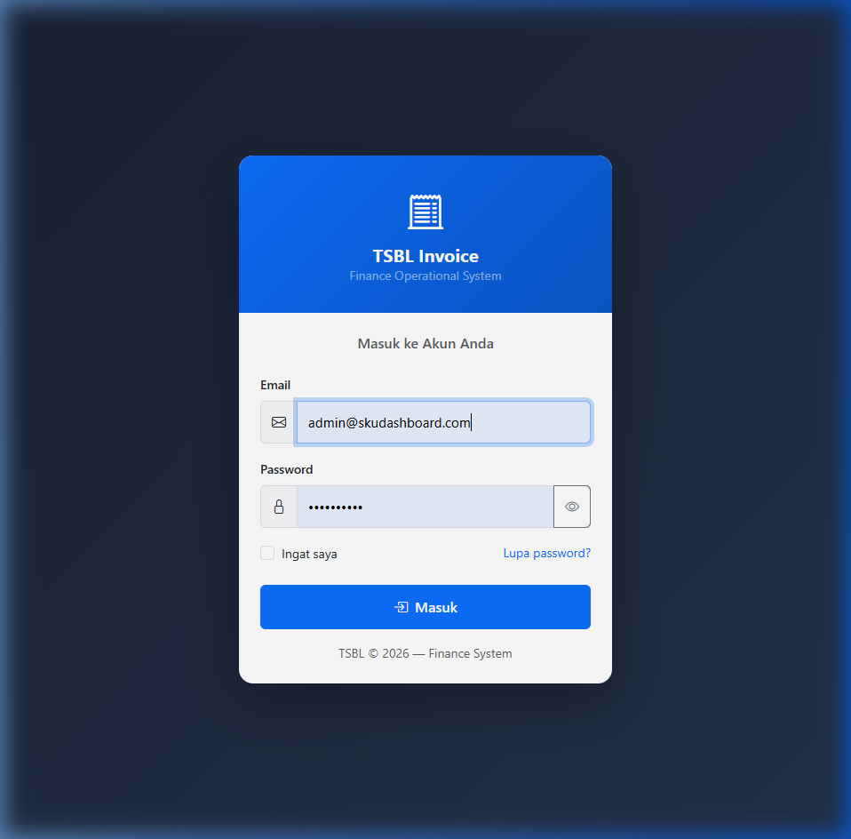
Setelah masuk, lihat pojok kanan atas layar. Nama kamu dan jabatan (role) harus terlihat di sana:
Dashboard adalah pusat informasi utama yang memberikan gambaran cepat status keuangan dan operasional.
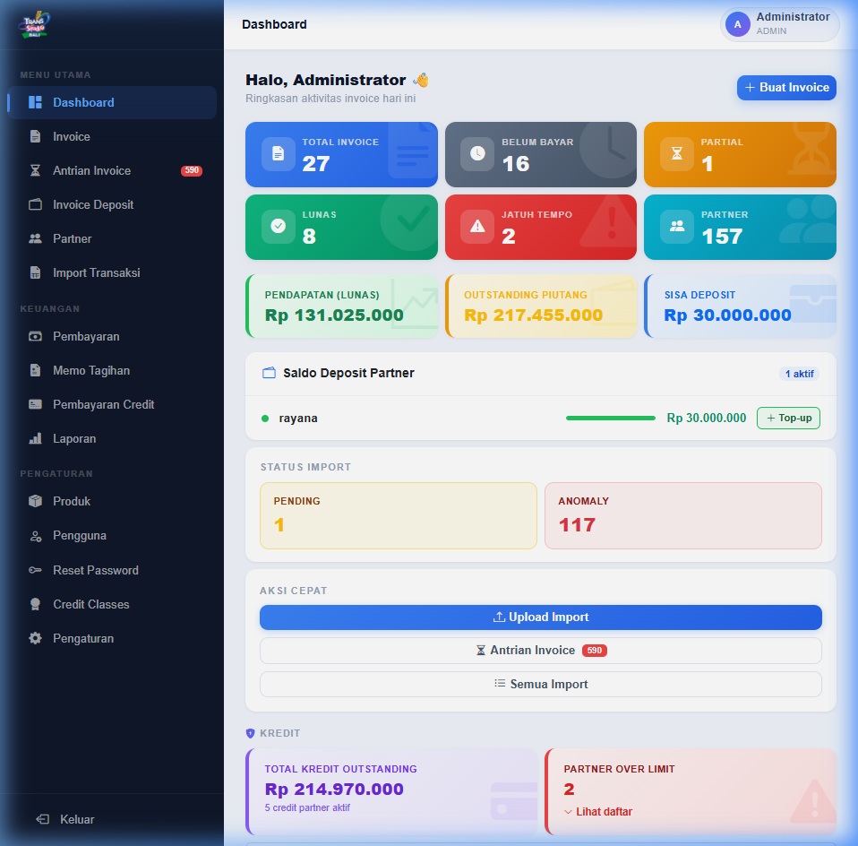
Di bagian atas dashboard ada 6 kartu berwarna:
| Kartu | Warna | Artinya |
|---|---|---|
| Total Invoice | 🔵 Biru | Jumlah semua invoice di sistem |
| Belum Bayar | ⚫ Abu | Invoice yang belum dibayar sama sekali |
| Partial | 🟡 Kuning | Invoice yang baru dibayar sebagian |
| Lunas | 🟢 Hijau | Invoice yang sudah lunas penuh |
| Jatuh Tempo | 🔴 Merah | Invoice yang sudah melewati batas bayar |
| Partner | Cyan | Jumlah partner terdaftar |
Di bawah kartu KPI, ada 3 kotak rangkuman keuangan:
Untuk menutup peringatan, klik tanda × (silang) di pojok kanan atas kotak peringatan.
Jika membuka sistem di HP atau layar kecil, sidebar akan tersembunyi.
Untuk membuka menu:
Ada 2 cara untuk membuka form buat invoice baru:
Cara A — dari Dashboard:
➜ Klik tombol + Buat Invoice di pojok kanan atas halaman Dashboard (tombol berwarna biru)
Cara B — dari menu Invoice:
➜ Klik menu Invoice di sidebar kiri
➜ Klik tombol + Invoice Baru di pojok kanan atas
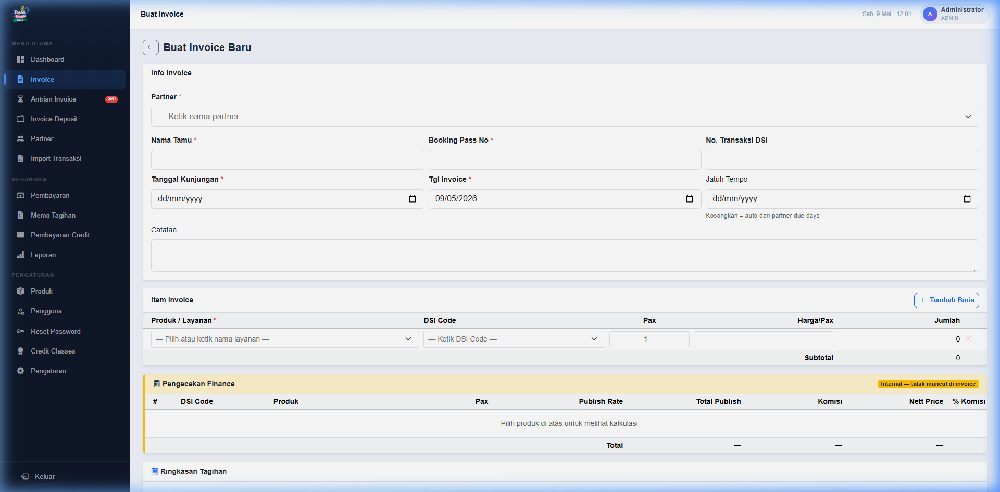
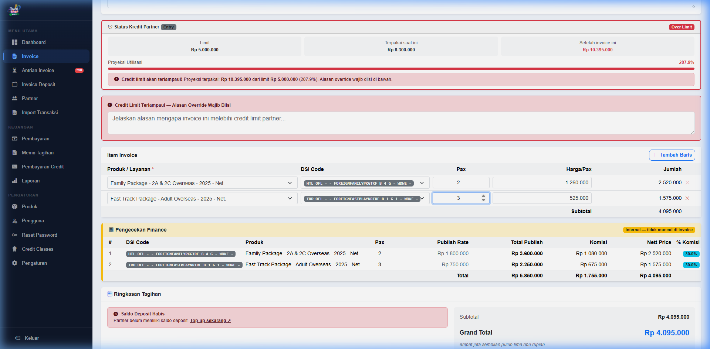
Di bagian bawah kanan form, pastikan angka total (termasuk pajak jika ada) sudah benar sesuai pesanan.
Di halaman detail invoice setelah disimpan:
➜ Klik menu Invoice di sidebar kiri
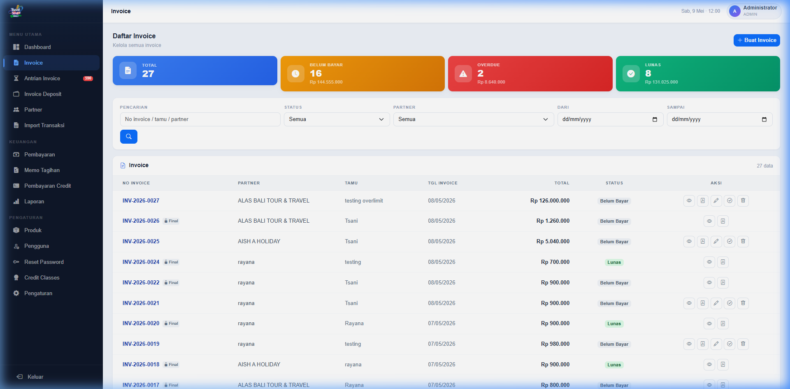
Gunakan tombol filter di bagian atas tabel untuk mempersempit hasil:
➜ Klik tombol Lihat atau klik langsung pada nomor invoice
Di halaman detail kamu bisa:
Berguna untuk membuat invoice baru yang isinya mirip dengan invoice sebelumnya, menghemat waktu pengisian ulang.
➜ Klik menu Antrian Invoice di sidebar kiri
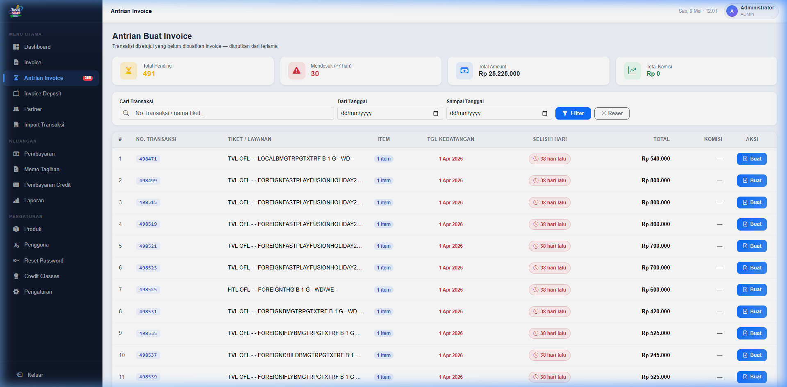
➜ Klik menu Invoice Deposit di sidebar kiri
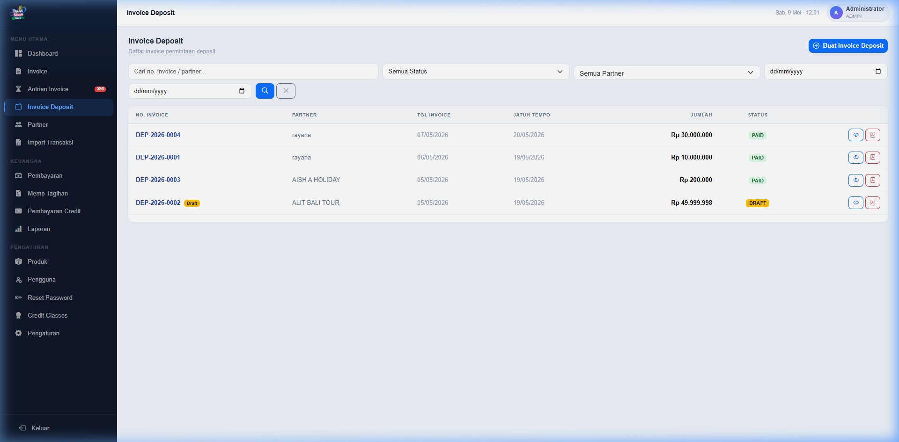
➜ Klik menu Partner di sidebar kiri
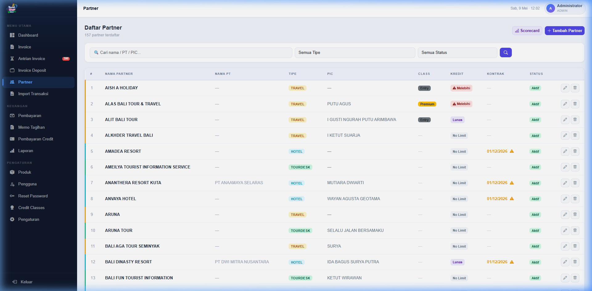
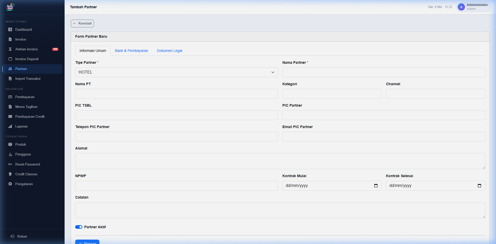
Klik nama partner di daftar untuk melihat:
Cara A — dari Dashboard:
➜ Di widget "Saldo Deposit Partner", klik tombol + Top-up di sebelah nama partner
Cara B — dari Detail Partner:
➜ Buka halaman detail partner → klik Top-up Deposit
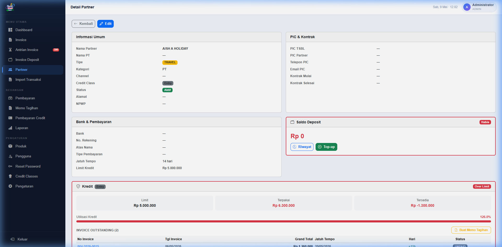
Sebelum upload, pastikan file kamu sudah benar:
➜ Klik menu Import Transaksi di sidebar kiri
➜ Klik tombol + Upload Baru di pojok kanan atas
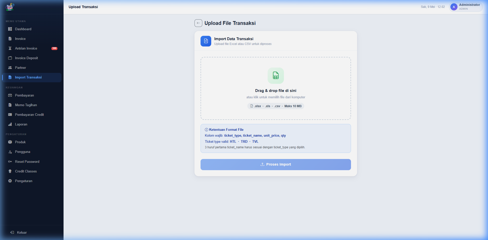
| Status | Warna | Artinya | Tindakan |
|---|---|---|---|
| Valid | 🟢 Hijau | Data normal, siap diproses | Approve |
| Anomaly | 🔴 Merah | Data bermasalah, perlu dicek | Override / Reject / Fix |
| Rejected | ⚫ Abu | Data ditolak | — |
Untuk setiap baris berstatus Anomaly:
| Tombol | Kapan Digunakan |
|---|---|
| Override | Data sebenarnya benar, tetapi sistem menganggap anomaly — paksakan diterima |
| Reject | Data memang salah dan tidak perlu diproses |
| Reassign Produk | Nama produk tidak dikenali — ganti ke produk yang benar |
| Sesuaikan Harga | Harga tidak sesuai — ubah ke harga yang benar |
➜ Klik menu Invoice di sidebar kiri
➜ Cari invoice yang pembayarannya ingin dicatat
➜ Klik Lihat untuk membuka detail invoice
Di bagian bawah halaman detail invoice, temukan seksi Riwayat Pembayaran:
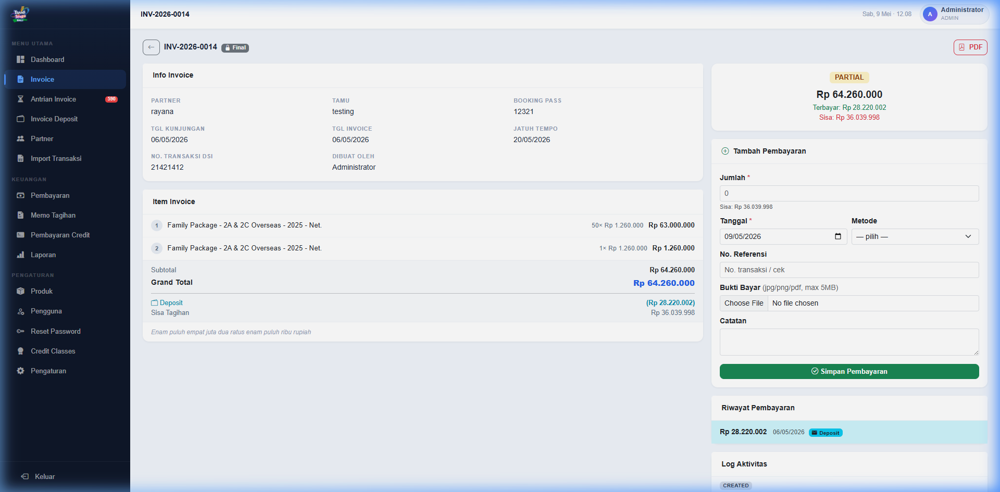
➜ Klik menu Pembayaran di sidebar kiri (bagian Keuangan)
Di sini kamu bisa melihat semua riwayat pembayaran dari semua partner dalam satu tampilan.
➜ Klik menu Memo Tagihan di sidebar kiri (bagian Keuangan)
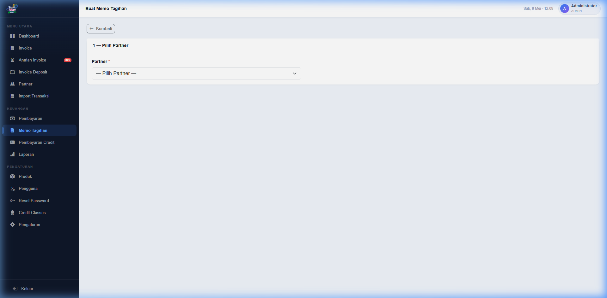
Di halaman detail memo:
➜ Klik tombol 📄 Download PDF
➜ Klik menu Pembayaran Credit di sidebar kiri (bagian Keuangan)
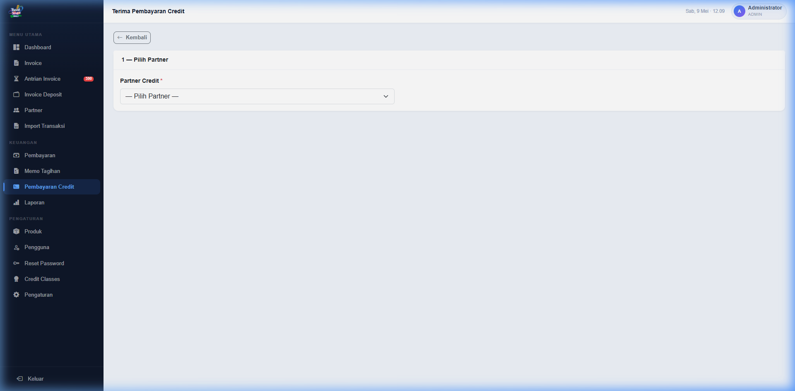
➜ Klik menu Laporan di sidebar kiri (bagian Keuangan)
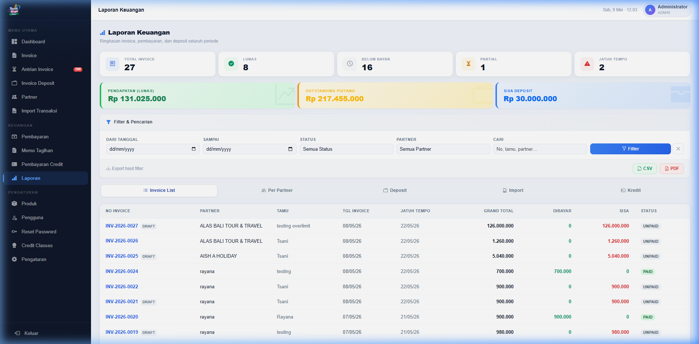
| Tombol | Hasil |
|---|---|
| Export CSV | Laporan invoice format Excel/CSV (bisa diedit) |
| Export PDF | Laporan invoice format PDF (siap cetak) |
| Export Credit CSV | Laporan kredit format Excel/CSV |
| Export Credit PDF | Laporan kredit format PDF |
Klik tombol yang sesuai → file otomatis terunduh ke komputer/HP kamu.
➜ Klik menu Produk di sidebar kiri (bagian Pengaturan)
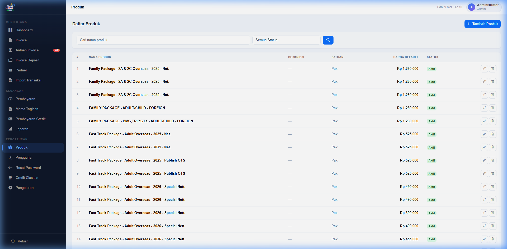
Alias berguna agar sistem bisa mengenali nama produk yang berbeda-beda saat import file.
➜ Klik menu Pengguna di sidebar kiri (bagian Pengaturan)
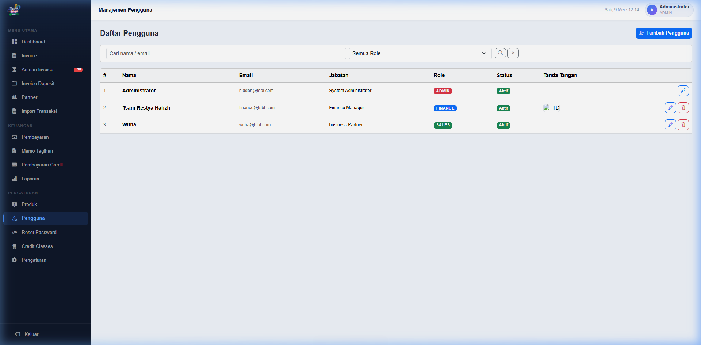
| Kolom | Keterangan |
|---|---|
| Nama Lengkap | Nama pengguna yang tampil di sistem |
| Email untuk login | |
| Username | Username alternatif untuk login |
| Password | Password awal (pengguna wajib ganti saat login pertama) |
| Role | Pilih: ADMIN / FINANCE / STAFF |
| Role | Akses |
|---|---|
| ADMIN | Akses penuh ke semua fitur termasuk pengaturan pengguna |
| FINANCE | Bisa finalisasi invoice, catat pembayaran, top-up deposit |
| STAFF | Bisa buat invoice dan import, tidak bisa proses keuangan |
➜ Klik menu Credit Classes di sidebar kiri
➜ Klik + Tambah Credit Class
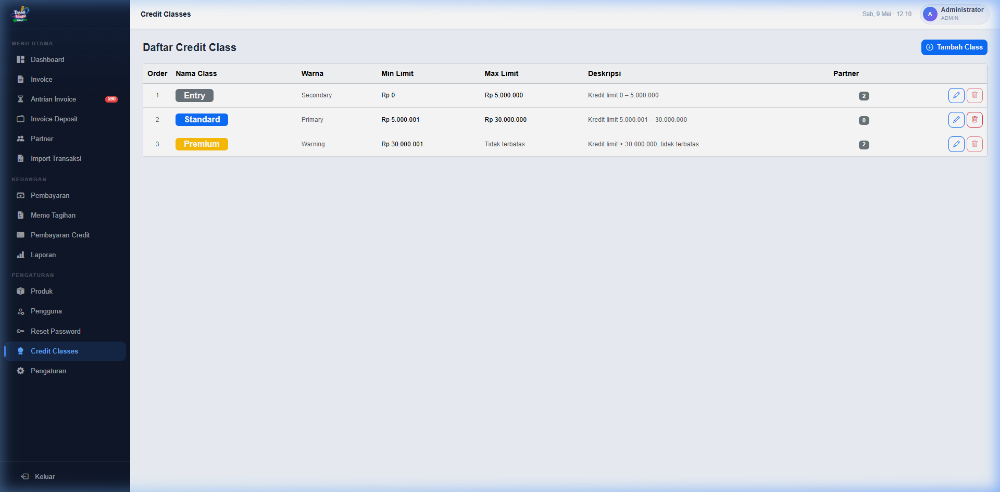
➜ Klik menu Pengaturan di sidebar kiri (bagian Pengaturan)
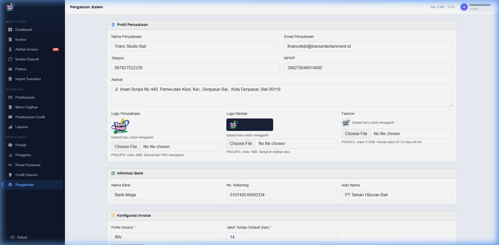
Kamu bisa mengubah:
Setelah mengubah, klik Simpan Pengaturan.
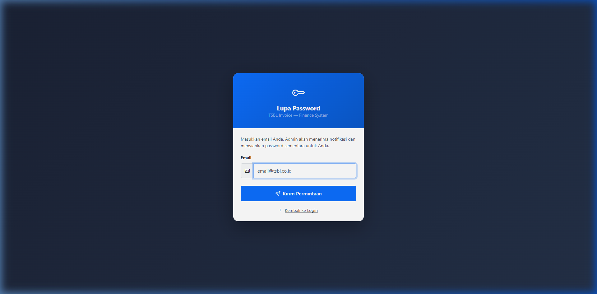
Admin yang menerima permintaan:
Setelah login dengan password dari Admin, sistem akan otomatis memintamu ganti password:
| Fitur | STAFF | FINANCE | ADMIN |
|---|---|---|---|
| Lihat Dashboard | ✅ | ✅ | ✅ |
| Buat & Edit Invoice (Draft) | ✅ | ✅ | ✅ |
| Finalisasi Invoice | ❌ | ✅ | ✅ |
| Catat Pembayaran Invoice | ❌ | ✅ | ✅ |
| Top-up Deposit Partner | ❌ | ✅ | ✅ |
| Import Transaksi (Upload) | ✅ | ✅ | ✅ |
| Approve Hasil Import | ❌ | ✅ | ✅ |
| Buat Memo Tagihan | ✅ | ✅ | ✅ |
| Buat Payment Memo | ✅ | ✅ | ✅ |
| Pembayaran Kredit (Batch) | ✅ | ✅ | ✅ |
| Lihat & Export Laporan | ✅ | ✅ | ✅ |
| Kelola Produk & Alias | ✅ | ✅ | ✅ |
| Kelola Pengguna | ❌ | ❌ | ✅ |
| Kelola Credit Classes | ❌ | ❌ | ✅ |
| Pengaturan Sistem | ❌ | ❌ | ✅ |
| Reset Password User Lain | ❌ | ❌ | ✅ |